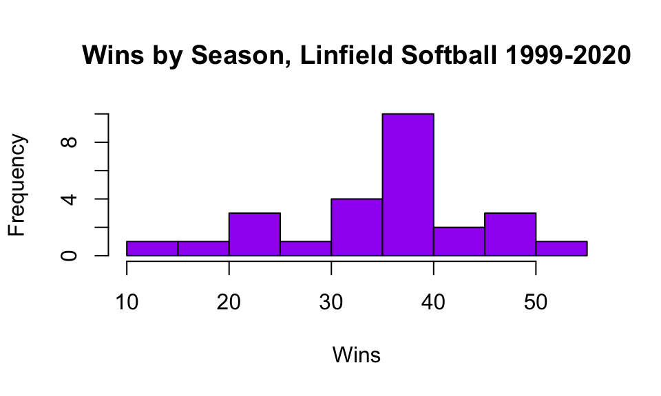
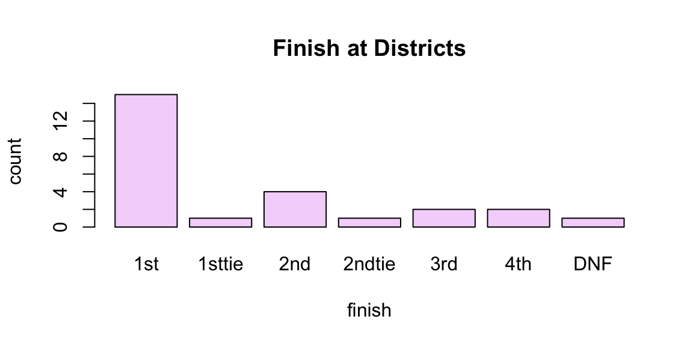
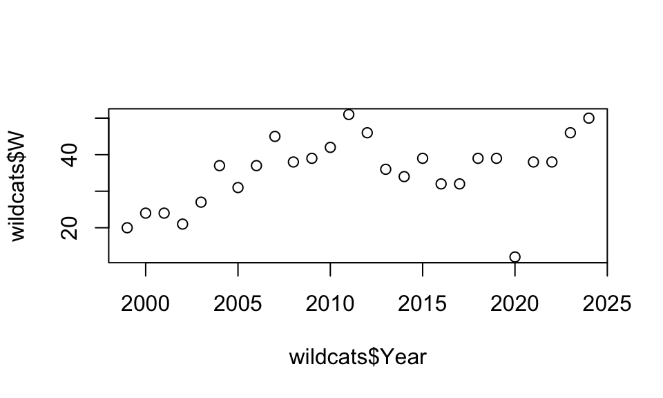
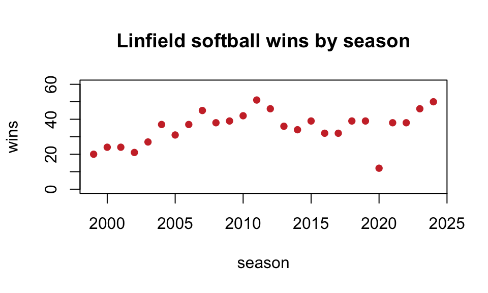
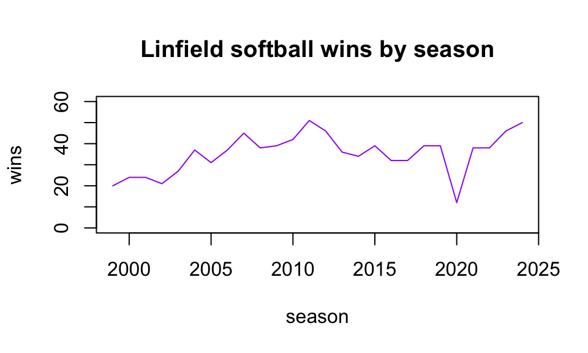
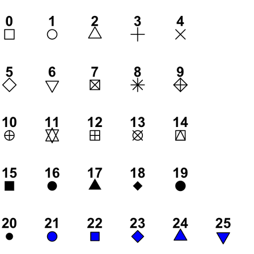

MATH 140: Using RStudio
I encourage you to reproduce all of the results on this page in your own RStudio session.
Data
In MATH 140 we use R to manage, explore, and analyze data. Yep, we use R to conduct
- exploratory data analysis (EDA),
- data visualization,
- data manipulation,
- statistical inference on data, and
- simulations to estimate the likelihood of obtaining data from a population with a known distribution.
We will either enter data manually in R (as vectors or data frames), or import data in R via spreadsheet files.
Vectors
A vector is an ordered list of values or characters.
Use the
c()command to input a vector.
Run this code in your session (copy, paste, and run):
score = c(219, 223, 186, 256, 295, 211, 175, 318)You have created a vector called score that contains
eight numbers. In fact, score is a record of my last eight
Yahtzee game scores. After you run the line above in your own
session, you will see the value score in your Environment
tab. Check that it’s there!
Note: The letter ‘c’ stands for combine, or
concatenate, and the ‘c’ also reminds me to separate the entries in the
c() command with commas.
Having named the vector, we can refer to it by name when we want to do anything with it. For instance:
| command | result | description |
|---|---|---|
length(score) |
8 | the number of entries in the vector |
sum(score) |
1883 | the sum of the scores |
mean(score) |
235.375 | the mean of the scores |
max(score) |
318 | the maximum score |
sd(score) |
50.5764979 | standard deviation of the scores |
More on finding descriptive statistics below.
Data Frames
A data frame is a collection of related vectors bound together as columns in a spreadsheet:
We can either create a data frame in R by assembling defined vectors, or we import a spreadsheet file as a data frame. We look at both options below.
Pro Tip: Do not enter data by hand if you don’t have to. It’s much, much easier (and less prone to error) to load saved spreadsheets into R than it is to retype the entries by hand in R.
Using the
data.frame()command to create a data frame from vectors.
Example 1: The Yahtzee data frame.
As the spreadsheet pictured above shows, I have two other bits of
information about those eight Yahtzee games I played: whether I scored a
Yahtzee (vector yahtzee) during the game, and my mood at
the start of each game (vector mood):
score = c(219, 223, 186, 256, 295, 211, 175, 318)
yahtzee=c("no","no","no","no","yes","no","no","yes")
mood=c("content","pensive","anxious","pensive","content","content","pensive","anxious")Note: If I’m not entering numerical values, I need to use quotes around each entry in the vector.
Create a data frame:
games=data.frame(mood,score,yahtzee)## mood score yahtzee
## 1 content 219 no
## 2 pensive 223 no
## 3 anxious 186 no
## 4 pensive 256 no
## 5 content 295 yes
## 6 content 211 no
## 7 pensive 175 no
## 8 anxious 318 yesNote: Each row gives three pieces of information about a single game. For instance, at the start of game 3 I felt anxious, my game 3 score was 186, and I did not roll a Yahtzee during the game. Sad.
Note: This data frame has two categorical
variables: mood and yahtzee and one
numerical variable: score. When entering
categorical data in a vector, we must use quotes around each entry. When
entering numerical data we do not use quotes.
The data frame games should appear in your Environment
tab after running the lines above. My Environment tab looks like
this:
Notice that the environment tab indicates whether a vector is
categorical (chr) or numerical (num or
int).
Example 2: Simulated data in a data frame
color=sample(c("red","blue","purple"),size=100,replace=TRUE,prob=c(.2,.2,.6))
roll=sample(1:4,size=100,replace=TRUE)
df=data.frame(color,roll)
dim(df)## [1] 100 2Unpacking the above code.
- Big picture: We create a data frame called
dfthat has two columns, calledcolorandroll, and 100 rows. - Each vector is created using the
sample()command in R.
- The vector
coloris created by drawing 100 times from the set of colorsc("red","blue","purple"), where, for each draw, the probability of selecting “red” is 0.2, the probability of selecting “blue” is 0.2, and the probability of selecting “purple” is 0.6. - The vector
rollis created by drawing 100 times from the set of numbers 1 through 4 (all numbers equally likely to be drawn). - The last command,
dim(df), returns the number of rows (100) and columns (2) indf. - We can also check out the first few rows directly (I choose 8 rows, of course):
head(df,8)## color roll
## 1 purple 4
## 2 blue 2
## 3 purple 3
## 4 purple 4
## 5 purple 1
## 6 red 3
## 7 blue 2
## 8 purple 4I hear you asking, “Why would you want to
build this df?”
Imagine wanting to simulate the following game: I have 10 4-sided dice in a box, 6 of them are purple, 2 are red, and 2 are blue. I want to pick a die at random from the box, roll it once, and record the roll; and I want to play this game 100 times and record the results.
And now I hear you asking “Again, why would I want to do this?”
OK, suppose a campus community is, politically, 20% democrat (blue),
20% republican (red), and 60% independent (purple). We pick 100 people
at random and ask them their opinion on some question that has 4
possible answers. The above df simulates what sort of
results we should expect if each person’s answer is random, and
independent of their political affiliation. Seeing what sorts of results
to expect if political affiliation is not a factor helps us to
investigate whether real data we gather suggests political affiliation
is a factor in one’s views on this question.
OK, this ends the brief introduction to building data frames in R from scratch. Again, generally data frames are more easily entered in R by importing them from spreadsheet files.
Import data files
A common file type is the .csv file, which stands for comma
separated values. With RStudio, such data files are at our
fingertips! We can import a .csv file from the web using the
read.csv() command. (We can also import other types of
spreadsheets with other, similar commands.)
The following code imports the file called softball.csv from our
course resource page, and it names the data matrix wildcats
in our RStudio session.
wildcats <- read.csv("https://www.mphitchman.com/stats/data/softball.csv")What does the wildcats data set look like? Here’s a look
at the first 5 rows:
head(wildcats,5)## Year Coach W L T District NCAA
## 1 1999 Laura Kenow 20 17 0 3rd
## 2 2000 Laura Kenow 24 10 0 4th
## 3 2001 Laura Kenow 24 17 0 2nd
## 4 2002 Jackson Vaughan 21 17 0 3rd
## 5 2003 Jackson Vaughan 27 11 0 2ndIn wildcats each row gives info about a season, and the
variables include the year, the coach, wins, losses, and how well the
team did in districts and nationals.
Enter this line in your session and click on wildcats in
your Environment tab. The data matrix will appear in the upper left pane
of your session in spreadsheet form.
Columns in data frames
The dollar sign
$is the key to extracting columns from a data frame. We get to a column by entering:dfname$colname.
For instance, wildcats$W will extract the W
column of the wildcats data frame, and
games$score will extract the score column of
the games data frame (my yahtzee games defined above).
To find the average number of wins per season from 1999 to 2024, we
can use the mean() command on the W column of
the wildcats data frame:
mean(wildcats$W)## [1] 35.26923The average number of losses per season?
mean(wildcats$L)## [1] 9.346154R comes with data
Generally we will work with a data frame that we load from a
spreadsheet, such as wildcats, or a data frame that we
input via vectors, such as games, but R also comes with
several built-in data frames. Try entering the following word in the
console prompt.
faithfulWhat you see displayed is a data frame! What on earth do these numbers mean?
This data frame gaves information about eruptions of the Old Faithful Geyser. Search on ‘faithful’ in the Help Tab to read all about it!
You can type
data()at the console prompt in RStudio to see a list of all the data sets that come with the program.
Descriptive Statistics
Here are some common commands for describing data.
| function | description |
|---|---|
length() |
returns the number of entries in the vector entered in the parentheses |
mean() |
returns the mean of the data |
median() |
returns the median |
max() |
returns the maximum of the data |
min() |
returns the minimum |
sum() |
returns the sum of the data |
var() |
returns the variance of the data |
sd() |
returns the standard deviation of the data |
summary() |
returns 6 statistics: min, Q1, median, mean, Q3, max |
fivenum() |
returns the 5 number summary: min Q1 median Q3 max |
table() |
returns the frequency of each unique value of the data |
Don’t you want to know the distribution of colored dice randomly chosen in Example 2 above!?
table(df$color) ##
## blue purple red
## 21 60 19The average of a bunch of numbers (need c()!!):
mean(c(4,5,8,5,4,3,6,7,3,8,9,12,11))## [1] 6.538462The 5 number summary for the W column of the
wildcats data frame.
fivenum(wildcats$W)## [1] 12.0 31.0 37.5 39.0 51.0How many games did Linfield softball win between 1999 and 2024?
sum(wildcats$W)## [1] 917Who has coached Linfield softball during this period, and how many seasons has each coach coached?
table(wildcats$Coach)##
## Jackson Vaughan Laura Kenow
## 23 3Basic Data Manipulation
Extracting a particular entry in a vector:
m = c(10,12,14,16,9,13)
m[3] # returns the third element in the vector## [1] 14Extracting a particular entry in a data frame:
games[2,3] # returns the element in row 2, column 3 of the games data frame## [1] "no"Extracting specific rows (by row numbers), say rows 2 through 5:
games[2:5,] ## mood score yahtzee
## 2 pensive 223 no
## 3 anxious 186 no
## 4 pensive 256 no
## 5 content 295 yesNote: The comma is necessary. In general, the values before the comma (2:5) specify the row numbers, and the values after the comma specify the column numbers. By leaving the column entry blank, R takes all the columns.
Filter by rows having some feature
We filter the Yahtzee games data frame built above to
just those rows meeting various conditions.
List all games in which my mood was
anxious
subset(games,mood=="anxious")## mood score yahtzee
## 3 anxious 186 no
## 8 anxious 318 yesList all games with score less than 200
subset(games, score < 200)## mood score yahtzee
## 3 anxious 186 no
## 7 pensive 175 noLet’s not talk about those games :).
List all games meeting two conditions (say score at least 200 and mood content)
subset(games,score>=200&mood=="content")## mood score yahtzee
## 1 content 219 no
## 5 content 295 yes
## 6 content 211 noNote: We may want to save a filtered data frame as a new one, which we do by giving it a name:
fun.games=subset(games,score>=200&mood=="content")Running that line would add the data frame fun.games to my RStudio session, and it will appear in my Environment tab. Check!
Restricting Columns
In the wildcats data frame, suppose we want to focus on
wins and losses by season. We can create a new data frame from the old
one that has just these columns:
catWL <- wildcats[c("Year","W","L")]
head(catWL)## Year W L
## 1 1999 20 17
## 2 2000 24 10
## 3 2001 24 17
## 4 2002 21 17
## 5 2003 27 11
## 6 2004 37 9Adding a Column
Suppose we want to add a column to the wildcats data
frame that specifies the total number of games played, something we can
calculate from existing columns (games played = wins+losses+ties). The
following code creates the GP column and tells R how to
build it:
wildcats$GP = wildcats$W+wildcats$L+wildcats$TBasic Data Visualization
R has some built-in graphing functions for histograms, boxplots, scatter plots, etc.
Histograms
A basic histogram - of Linfield wins by season.
hist(wildcats$W)
When presenting data, we have a responsibility to make it readable, so we can do better than the above. We can supply titles, axis labels, annotations, colors, etc to help us visualize the data in a more useful way.
hist(wildcats$W,
main="Wins by Season, Linfield Softball 1999-2024",
xlab="Wins",
col="purple",
breaks=10
)We specify the bins in a histogram with the breaks
option. If we have too few bins for the data, we lose all sorts of
information, and if we have too many bins we might have a harder time
seeing the shape of the distribution through the noise.
Boxplots
A boxplot is a visual representation of the 5 number summary, and R loves to make them!
Here’s a boxplot in its simplest form.
boxplot(wildcats$W)By default a boxplot is presented vertically, but we can ask for a horizontal boxplot as well, and we can add a splash of color.
boxplot(wildcats$W,
main="Linfield softball wins by season (1999-2024)",
col="red",
horizontal = TRUE)AND, we can add text to a graph. For instance, we can add the values in the 5 number summary to the boxplot, which gives more precision to the plot!
boxplot(wildcats$W,
main="Linfield softball wins by season (1999-2024)",
col="red",
horizontal = TRUE)
v<-fivenum(wildcats$W)
text(x=c(v[1:5]),y=c(rep(1.3,5)),c(v[1:5]),cex=.7,col="purple")
Barplots
For categorical variables it can be useful to make barplots of
counts. If we’re considering a vector of values we use the
barplot() command in conjuntion with the
table() command
barplot(table(wildcats$District),main="Finish at Districts",ylab="count",xlab="finish",col="#F5D7FB")
Choosing plot colors
If you type colors() at the console prompt you can get a
list of names of built in colors.
You can find color codes on-line too, such as the one I used in the barplot code. Here’s one site for this: https://htmlcolorcodes.com/.
Scatter plots
A scatter plot is a useful way to visualize the relationship between two numeric variables. Here’s a scatter plot in its simplest form.
plot(x=wildcats$Year,y=wildcats$W)
We can change the shape of points in a plot with the pch
option, and change the scale of the y-axis.
plot(x=wildcats$Year,y=wildcats$W,
main="Linfield softball wins by season",
ylab="wins",
xlab="season",
col="brown3",
ylim=c(0,60),
pch=16)
A quick guide to pch and point shapes (google “R pch options” for more details):

As an aside, we can create a line plot as well, by specifying
type="l" (that’s an ‘l’ for ‘line’, not the number 1).
plot(x=wildcats$Year,y=wildcats$W,
main="Linfield softball wins by season",
ylab="wins",
xlab="season",
col="purple",
ylim=c(0,60),
type="l")A little EDA (exploratory data analysis)
Let’s investigate the faithful data that comes in R.
dim(faithful) # This gives the number of rows (observations) and columns (variables)## [1] 272 2This data frame has 272 rows and 2 columns. What are the variables?
colnames(faithful) ## [1] "eruptions" "waiting"The help tab (in the lower right pane) gives information about this
data frame (type faithful in the search box.) The variable
eruptions gives the duration of an eruption (in minutes),
and the second variable, waiting, gives the waiting period
(in minutes) until the next eruption.
We can ask for the first 7 rows of the data frame:
head(faithful,7) ## eruptions waiting
## 1 3.600 79
## 2 1.800 54
## 3 3.333 74
## 4 2.283 62
## 5 4.533 85
## 6 2.883 55
## 7 4.700 88We can extract the entry in row 6, column 2:
faithful[6,2]## [1] 55We can extract the subset of all the data for which the eruption value is at least 5 minutes:
subset(faithful, eruptions >= 5)## eruptions waiting
## 76 5.067 76
## 149 5.100 96
## 151 5.033 77
## 168 5.000 88Only 4 of the 272 eruptions exceeded 5 minutes. Seems like a rare event!
A histogram of eruption duration:
hist(faithful$eruptions,
main="Old Faithful Eruptions",
xlab="Duration (minutes)",
col="wheat"
) A scatter plot:
plot(x=faithful$eruptions, y=faithful$waiting,
main="Old Faithful Eruptions",
ylab="Wait time (minutes)",
xlab="Duration (minutes)",
pch=16,
col="wheat"
) 
Test your understanding
Below are some bits of code. Can you see what information it will provide?
- What does this code give?
max(wildcats$W)## [1] 51ANSWER: The maximum number of wins in a season over this time period.
Which season was this? Here’s a way to extract the entire season (row) from the data matrix that had the most number of wins:
subset(wildcats, W == max(wildcats$W))## Year Coach W L T District NCAA GP
## 13 2011 Jackson Vaughan 51 3 0 1st 1st 54Wow! What a season! 51 wins against just 3 losses, first in districts, and National Champions!
- What does this code give?
table(wildcats$NCAA)##
## 1st 2nd 3rd 4th
## 19 2 2 2 1ANSWER: It specifies how well Linfield did at Nationals over the 1999-2024 time period. Linfield has finished 1st twice, 2nd twice, 3rd once, and 4th once. The other seasons they didn’t finish as high as 4th.
- What does this code give?
sum(wildcats$District=="1st")## [1] 15ANSWER: It gives the number of seasons from 1999-2024 in which Linfield was 1st in the District
- What does this code give?
wildcats$winpct <- wildcats$W/wildcats$GPANSWER: It creates a new column in the data frame wildcats called
winpct. This column records the winning percentage for the
team each season (wins divided by games played).
- What does this code give?
max(wildcats$winpct)## [1] 0.9444444ANSWER: It returns the best winning percentage for a season between 1999 and 2024.
Which season was this?
subset(wildcats, winpct == max(wildcats$winpct))## Year Coach W L T District NCAA GP winpct
## 13 2011 Jackson Vaughan 51 3 0 1st 1st 54 0.9444444Not surprisingly, the best winning percentage occurred in the magical 2011 season in which the team went 51-3.
- What does this code give?
plot(x=wildcats$L, y=wildcats$W,cex=.7,
main="Linfield Softball (1999-2024)",
xlab="Losses",
ylab="Wins")
ANSWER: Scatterplot of wins vs losses. This plot makes it clear that 2020 was a strange season. This visual deviation from the trend indicates that something “different” was going on. Hmm… global pandemic?
- What does this code give?
fivenum(wildcats$W[wildcats$Coach=="Jackson Vaughan"])## [1] 12.0 33.0 38.0 40.5 51.0ANSWER: This code gives the 5 number summary for the Linfield
softball wins for just the seasons in the data set in which the coach
was Jackson Vaughan. More generally, consider this code, which makes use
of the aggregate() method:
aggregate(wildcats$W, by=list(wildcats$Coach), FUN = median)## Group.1 x
## 1 Jackson Vaughan 38
## 2 Laura Kenow 24The aggregate() method executes a function on a variable
that has been grouped by a categorical variable. In the code above we
have chosen to determine the median number of wins for each coach over
this time period.
- How about this one?
xis a vector of three values,xbaris the mean of the values inx. What isv?
x = c(10,12,17)
xbar = mean(x)
v = sum((x - mean(x))^2)/(length(x)-1)
v## [1] 13ANSWER: This code reproduces the formula for the variance of a set of
numbers:\[s^2 =
\frac{1}{n-1}\sum_{i=1}^n(x_i-\overline{x})^2.\] Convinced? let’s
check that this really gives the variance of the data set
x:
var(x)## [1] 13Yup.